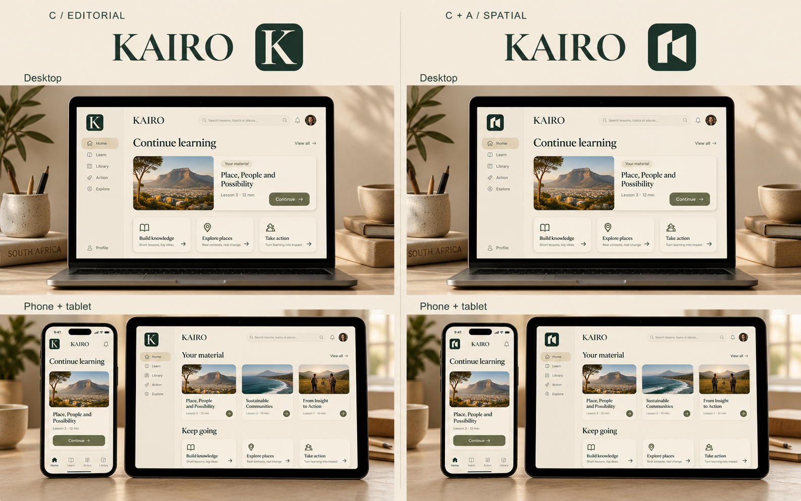
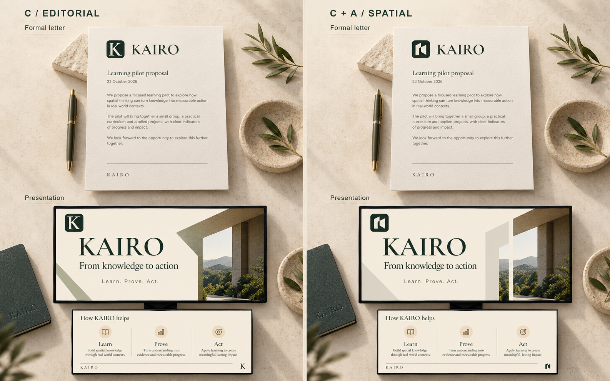
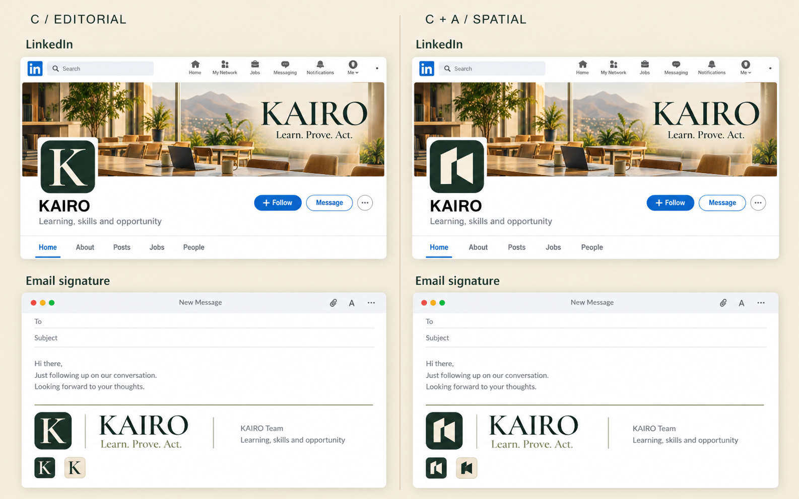

Selection correction: this older page used the wrong selected design. The user selected the rounded continuous-path symbol and geometric wordmark. Open the corrected comparison.
KAIRO · Historical comparisonThe same warmth.
A different signature.
Left: C / Editorial. The serif KAIRO wordmark and serif K monogram.
Right: C + A / Spatial. The same wordmark with the architectural passage symbol.
Desktop, phone and tablet.

Same layout and learning content. C sets the editorial tone; the symbol works as the app's compact visual anchor. These are design mockups, not current app screens.
Formal letters and presentations.

Wordmark-led documents can stay quiet. A modest symbol and contour motif can give opening slides more spatial character without changing the typography.
My recommendation: keep C's typographic personality and use A's refined symbol for avatars, app icons and compact marks. Use the wordmark alone where a formal document needs simplicity. That is one coherent identity with different lockups, rather than two brands competing.
LinkedIn and email.

The avatar changes while the banner and signature typography stay consistent. The refined symbol gives the compact identity its own shape.